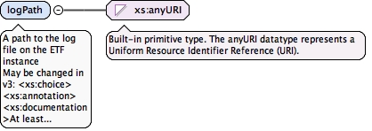

run.xsd. Created by Jon Herrmann, (c) 2016-2017 interactiveinstruments GmbH. This file is part of ETF which is licensed under the Apache LicenseVersion 2.0
<xs:element name="styleResultWith" type="RefType" minOccurs="0"><xs:annotation><xs:documentation>Optional association with result style if results are styled with a non-default style</xs:documentation></xs:annotation></xs:element>
<xs:element name="TestRun"><xs:complexType><xs:annotation><xs:documentation>The root object which composes the objects from each model branch</xs:documentation></xs:annotation><xs:sequence><xs:element name="label" type="xs:string"/><xs:element name="defaultLang" type="xs:language"/><xs:element name="startTimestamp" type="xs:dateTime"/><xs:element name="startedBy" type="RefType" minOccurs="0"/><xs:element name="testTasks"><xs:complexType><xs:sequence><xs:sequence><xs:element ref="TestTask" maxOccurs="unbounded"/></xs:sequence></xs:sequence></xs:complexType></xs:element><xs:element name="logPath" type="xs:anyURI"><xs:annotation><xs:documentation>A path to the log file on the ETF instance</xs:documentation><xs:documentation source="v3ModelChange">May be changed in v3:<xs:choice><xs:annotation><xs:documentation>At least one local or one remote log file</xs:documentation></xs:annotation><xs:sequence><xs:element ref="LocalLog"/><xs:element ref="RemoteLog" minOccurs="0"/></xs:sequence><xs:element ref="RemoteLog" minOccurs="1"/></xs:choice>where LocalLog and RemoteLog are:<xs:element name="LocalLog"><xs:complexType><xs:attribute name="href" type="ExternalUriType"/></xs:complexType></xs:element></xs:documentation></xs:annotation></xs:element></xs:sequence><xs:attributeGroup ref="IdentifierAttributeGroup"/><xs:attribute name="status" type="TestResultStatusType" use="optional"/></xs:complexType></xs:element>
An ETF model item instance possesses an unique ETFID.
Source
<xs:element name="TestTask"><xs:complexType><xs:annotation><xs:documentation>A single task which executes a ETS with user provided parameterSet againts a TestObject</xs:documentation></xs:annotation><xs:sequence><xs:group ref="TestTaskConfigurationGroup"/><xs:element name="testTaskResult" type="RefType" minOccurs="0"/></xs:sequence><xs:attributeGroup ref="IdentifierAttributeGroup"/></xs:complexType></xs:element>
May be changed in v3: <xs:choice><xs:annotation><xs:documentation>At least one local or one remote log file</xs:documentation></xs:annotation><xs:sequence><xs:element ref="LocalLog"/><xs:element ref="RemoteLog" minOccurs="0"/></xs:sequence><xs:element ref="RemoteLog" minOccurs="1"/></xs:choice> where LocalLog and RemoteLog are: <xs:element name="LocalLog"><xs:complexType><xs:attribute name="href" type="ExternalUriType"/></xs:complexType></xs:element>
Diagram

Type
xs:anyURI
Properties
content
simple
Source
<xs:element name="logPath" type="xs:anyURI"><xs:annotation><xs:documentation>A path to the log file on the ETF instance</xs:documentation><xs:documentation source="v3ModelChange">May be changed in v3:<xs:choice><xs:annotation><xs:documentation>At least one local or one remote log file</xs:documentation></xs:annotation><xs:sequence><xs:element ref="LocalLog"/><xs:element ref="RemoteLog" minOccurs="0"/></xs:sequence><xs:element ref="RemoteLog" minOccurs="1"/></xs:choice>where LocalLog and RemoteLog are:<xs:element name="LocalLog"><xs:complexType><xs:attribute name="href" type="ExternalUriType"/></xs:complexType></xs:element></xs:documentation></xs:annotation></xs:element>
SKIPPED, if at least one status value is SKIPPED because atest case depends on another test case which has the status FAILED
enumeration
NOT_APPLICABLE
NOT_APPLICABLE if at least one status value is NOT_APPLICABLE,in the case the test is skipped for instance because the test object doesnot provide the capabilities for executing the test
enumeration
INFO
INFO, if at least one status value is INFO
enumeration
WARNING
WARNING, if at least one status value isWARNING
enumeration
UNDEFINED
UNDEFINED, in all other cases
enumeration
PASSED_MANUAL
PASSED_MANUAL, if at least one status value is PASSED_MANUAL(if the test is not automated and the user has to validate results manuallybased on instructions in the report) and all others are values arePASSED
enumeration
INTERNAL_ERROR
INTERNAL_ERROR, if at least one status value is INTERNAL_ERRORin the case the test engine throws an unexpected error that forces the testrun to stop
<xs:group name="TestTaskConfigurationGroup"><xs:sequence><xs:group ref="ModelItemGroup"/><xs:element name="executableTestSuite" type="RefType" minOccurs="1"/><xs:element name="testObject" type="RefType" minOccurs="1"/><xs:element name="styleResultWith" type="RefType" minOccurs="0"><xs:annotation><xs:documentation>Optional association with result style if results are styled with a non-default style</xs:documentation></xs:annotation></xs:element><xs:element ref="ArgumentList" minOccurs="0"/></xs:sequence></xs:group>